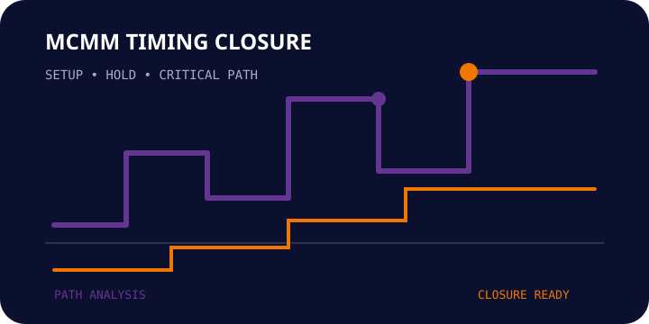

01. Constraint Analysis
Review SDC intent, clocks, exceptions and scenario coverage.
 TERASILICON
IQ
ENGINEERING THE FUTURE OF SILICON
TERASILICON
IQ
ENGINEERING THE FUTURE OF SILICON
TIMING SIGNOFF / CAPABILITY
SDC • MCMM • SETUP / HOLD • CRITICAL PATH
Terasilicon IQ supports timing intent review, multi-corner analysis and closure activities that move designs from timing risk to signoff confidence.
Discuss your requirement →
ENGINEERING SCOPE
ENGINEERING APPROACH
Terasilicon IQ supports timing intent review, multi-corner analysis and closure activities that move designs from timing risk to signoff confidence.
FROM REQUIREMENT TO SIGNOFF
Review SDC intent, clocks, exceptions and scenario coverage.
Trace critical setup/hold paths and isolate the dominant contributors.
Apply focused fixes, re-check scenarios and package signoff evidence.
APPLICATIONS
Close critical paths before the block is released to integration.
Review timing across the required modes and corners.
Rapidly assess timing risk after implementation changes.
Provide a clear view of remaining timing risk and closure status.
SIGNOFF SUPPORT
Tell us what you are trying to close, verify or implement and we can discuss the engineering support that fits your project.
Start your requirement discussion →